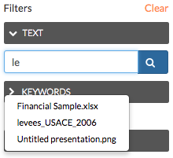
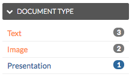
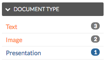

Discovering available content¶
There are many different ways to find, filter and display data throughout Exchange. Whether you know exactly what you’re looking for, or have just a general idea, Exchange helps you find exactly what you need.
Exchange Search - Using just one search, you can find all of the maps, layers or documents that are available to Exchange, as well as services added by other users.
Exchange supports the registration of remote geospatial content using pycsw. This allows a user to organize spatial data in catalogs, but search on all of them at the same time. Once a remote layer is registered, you are able to retrieve metadata and a thumbnail by hitting different endpoints.
What does this mean for you? You can search for records which are stored outside of Exchange. This unified search makes finding data in Exchange faster and easier than ever.
From the Boundless Exchange homepage, simply enter your search term in the Search for Content field. When you type in the search field, Exchange will list the layers, maps, and documents matching the text you’ve entered. Select a resource in the list to open its information page, or press Enter to open the list of results that are relevant to your search terms.
For example, if you type “te” in the search box, and press Enter, you will get a list of all of the results that begin with the letter combination “te” in the title or abstract.
Note: You can use multiple search terms, separated by ‘and’ or ‘or’, but this is a simple search, and does not require wildcards or Boolean operators.

Discover the Available Content - In Exchange, your data is separated into multiple categories based on the content of the information. Your Exchange administrator can configure your datasets and metadata based on your settings and requirements. When searching for data, selecting on one of these available datasets will help you find information faster by returning only those results meeting the category criteria.

This is an example of what the content datasets could be for your Boundless Exchange instance. The specific datasets will depend on your settings and requirements. Hover over the individual categories to see what type of data is in each one.
Featured Content - Featured datasets are available on the Boundless Exchange homepage, and allow users to immediately see maps, layers or documents which have been highlighted as important. A dataset can be featured by editing its metadata, and ensuring the Featured checkbox is selected.

Browsing Layers - To open the Layers page, click on the Data link on the Boundless Exchange toolbar, and select Layers in the drop-down menu. Here you can browse data that has been uploaded into Exchange. From the layers page, you can see how many times a layer has been viewed, and its average user rating. Selecting on the layer’s title will take you to the information page where you can download the layer, edit metadata, or view additional information about the layer.
Browsing Maps - To open the Maps page, click on the Maps link on the Boundless Exchange toolbar, and select Explore Maps. Like the Layers page, the Maps page lets you browse the available maps that have been uploaded into Exchange. The map’s rating and the number of times it has been viewed are available on this page. Similar to a layer, selecting on the title of a map will take you to its information page.
Filtering - Layers, maps and documents can be filtered to help you better manage the data available in Exchange. Listed below are several options to refine your search results.
- Filter by Text - Filters results using basic search terms. Type your search terms in the text box, and select your results from the displayed list. Multiple terms can be used, separated by ‘and’ or ‘or’.

- Filter by Keywords - If a user has associated keywords to the layer in the metadata, you can filter layers by those terms. Select on a keyword to limit results to those layers with associated keywords.

- Filter by Type (layers and documents) - You can filter layers by raster, vector, remote and WMS. Documents can be sorted by text, image or presentation. The selected filter will display in blue.
 

- Filter by Category - When the metadata for a layer or a map has been tagged with a specific category, it will be reflected in the Categories panel. Your layers can be added to the categories created in your settings:

This is an example of what the categories will look like. They will correspond with the available datasets from the homepage, but may differ among Exchange instances.
When filtering, click on a category to limit the results list to those layers tagged with that category title. Selecting another available category expands your results to include those layers in the results list. Click on the category a second time to remove it from the layer results list.

- Filter by Owners - You can select data based on the owner of the product. This may be useful if you are trying to quickly find products created by individuals on a joint project.

- Filter by Date - This will limit the list of products by a date range. In the Date panel, select the start date and the end date for the date range. The list will update to reflect those layers, documents or maps created within that timeframe.

- Filter by Regions - Type a geographical region in the textbox to find data only associated to that region.

- Filter by Extent - Zoom in and out to find products pertaining only to the extent displayed on the map.